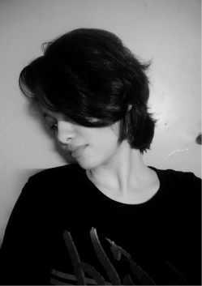
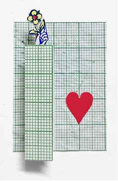

I’m Bharati Kamble, a senior graphic designer and visualizer with 5+ years in brand communication, now expanding into UI/UX. After months of intensive UX practice, building my first case study, and publishing this portfolio, I’m looking for a UX/UI designer role.
The Creative
Explorer
When I’m not pushing pixels in Figma, I’m usually out trekking, chasing horizons, or exploring new textures through mixed-media collages and experimental mediums. Restless by nature and proudly a Sagittarius. I treat every project like a canvas for discovery.